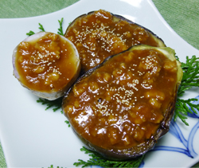

米ナスとセレベス(里芋)の
鶏みそあんかけ
鶏みそあんかけ
- 調理時間：30 分
- （一人当たり）
- カロリー：264kcal
- たんぱく質：6.7g
- 脂質：8.5g
- 炭水化物：40.1g
- 塩分：3.2g

＜4人分＞
- 米ナス
- 2個
- セレベス（里芋）
- 2個
- サラダ油
- 少々
- とりささみ
- 100g
- ・赤みそ
- 120g
- ・砂糖
- 100g
- ・酒
- 大さじ2～3
- ケシの実
- 少々
A

- 鶏みそをつくる（Aの材料）
1) ささみの筋を取り除き、粗みじんに切ってから包丁でたたいてひき肉状にする。
2) 鍋に赤味噌、砂糖、酒を入れ、よく混ぜ合わせてから、強火にかける。煮立ってツヤが出てきたら、中火にして練り上げる。
3) 火から下ろして、ささみを加えてよく混ぜる。再度火にかけて、2分程練ってささみに火を通す。 - セレベスは2等分に切り、お皿にいれてラップをかけて2分ほど加熱する。
- 米ナスは縦2等分に切り、水にさらす。電子レンジで30秒ほど加熱する。
フライパンにサラダ油をしき、表面に焼き目をつける。 - 米ナスとセレベスに①の鶏みそをたっぷりのせてケシの実をふりかける。
米ナスとセレベス(里芋)の
鶏みそあんかけ
ナスは夏から秋が旬の野菜です。使い勝手がよく値段も手ごろなので重宝される食材です。色は紫がほとんどですが、最近は緑、黄白、緑の斑入りなども出回っています。栄養成分は水分が９０％以上で多いのが特徴。皮の紫色はポリフェノールの一種のアントシアニンで、目や肝臓の機能を向上させるはたらきや抗酸化作用があります。調理は油との相性が非常によいのに加え、油をよく吸うので体脂肪が気になる方は調理方法を工夫されるとよいでしょう。